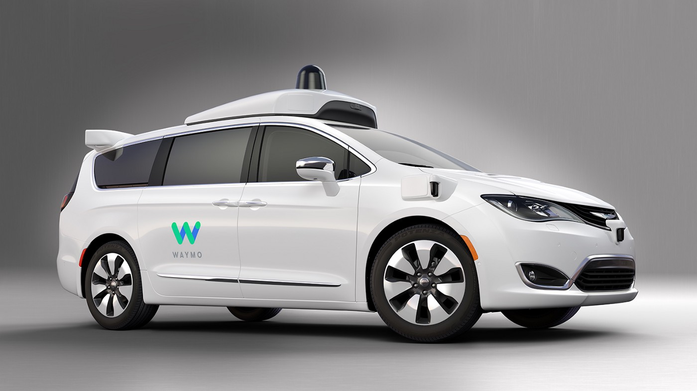
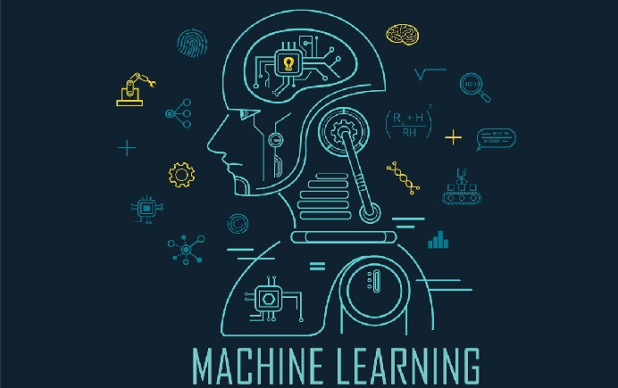

IT Technologies
Robots

Robots are a machine that is controlled by a computer to complete tasks, sometimes complex. Robots can be controlled by a human user or by an artificial intelligence or AI. Robots have come to fulfill tasks in many industries, such as:
- Automotive
- Military
- Medical
- Packaging
- Mass production
- Agriculture.
One of the earliest robots was a stationary hydraulic lifting arm, called the Unimate, invented in 1954 by American engineer George Devol. This was then developed by a company name Unimation in 1956. 1961 saw the first line of Unimate hydraulic arms delivered to general motors factories which had the task of stacking and removing hot metal parts from a die-casting machine. Other types of robots are UAVs or Unmanned Aerial Vehicle. These robots are often controlled by a user from the ground and a used in the military and by civilians. UAVs range in all sizes from small children’s toy drones to the Taranis demonstrator a UCAV (Unmanned Combat Aerial Vehicle) with a maximum take off weight of 8000KGs.
UAVs use inertial sensors to correlate information and for object avoidance. The small drones are powered by a lithium-polymer battery while the larger drones are powered by hydrogen fuel cells. They rely on software referred to as the flight stack, this will gather and correlate the data from the inertial sensors, mission planning, aid ground control and control the motors. The real time computing is done by SBCs like Raspberry Pis and shielded by a PXFmini, an open autopilot.
UAVs can be used for to help farmers with many tasks and make farming more efficient. One instance of this is water and fertilizer efficiency, equipped with a thermal imaging camera or sensor, the drone will be able to see what ground areas need watering and fertilizer and what areas don’t, this allows for less wastage and better coverage of resources. They can be programmed to follow a map drawn by the user, allowing farmers to scout more of their crops, and even hard to reach places a lot quicker. They can also spray and seed their crops all from the comfort their back porch. UAV technology is something that is constantly undergoing development and innovation. With everything they can do now there is a few logical improvements that I can personally think of, these would include:
- better battery systems and charging capabilities.
- strengthened construction with lighter weight materials.
- Improved actuators.
These improvements will and are currently being implemented in robots of all kinds. Improving battery and charging capabilities will allow robots to run for longer and charge quicker, allowing them more time to focus on tasks and their programmed functions. And improved SBCs will allow for more complex computing and even AI learning. Robots will be better equipped for heavy lifting, working in dangerous environments or in situations that require delicate and perfectly executed work, such as in a laboratory or a nuclear powerplant.
Development of all-solid-state lithium-ion batteries generate longer battery life with more cycles. All-solid-state lithium batteries have in the past been prone to losing life quickly and sometimes even combustion. A battery of this type is currently being developed by Samsung, and they have successfully created an all-solid-state battery that has 900 watt-hours per litre and can survive through more cycles. Super Magnesium Alloy would be a perfect material for the skeletal components, actuators and outer casing of a robot. It is lighter and stronger than aluminium and cheaper to make than carbon fibre. It is also largely resistant to corrosion and wear and tear. The actuators can be improved by making them out of Super Magnesium Alloy. Depend on the type of robot the actuators could even be replaced by artificial muscles; this allows the robots to move with the same ease as humans.
The impact of robots in society has certainly had a positive effect in many aspects. We have all been affected by robots or robotics in some sense in our day to day lives. From the humble Roomba vacuuming floors to the automated hydraulic arms working in factories. Robots help us to do tasks either too difficult or overly repetitive. As the progression goes on there will be more robots in our society, this will have different effects on society.
I personally believe that robots will have both positive and negative effects. It has the potential to be helpful many people and at the same time replace many of the jobs lower socioeconomic class people rely on. Truck driving could easily be replaced by autonomous vehicles, this is the negative whereas the positive is that companies and warehouses will be able to move stock over long distances more efficiently eliminating the need for breaks. There can be many positive effects from implementing more robots into our society, much like a science fiction movie, they would be able to assist us in our day to day lives, such as helping the elderly with menial chores.
There are a few types of jobs that will never truly be able to be replaced by robots and those are jobs that require moral decisions and jobs that require creativity. An example of a moral decision job would be a judge of a court of the legal justice system, while a robot could learn the ins and outs of the legal system it would not be able to make a moral decision regarding punishment or reconciliation for an individual.
I believe that robots and advancement in robotic technology will have a positive effect on mine and my family’s day to day lives. Like I stated in the previous section, robots can do menial and tedious repetitive jobs and tasks, allowing more time for things deemed more important by the individual person, I personally wouldn’t mind a robot taking care of my chores while I focused on other responsibilities, study and work or entertainment and my family. Robots would also be able to assist my elderly relatives to a more independent style of living, rather than being moved into a retirement home, a robot could handle the tasks of cleaning and carrying groceries, or running errands that would have been deemed too difficult for someone of a more frail state.
Drones have also been used in delivery of supplies to rural Australians living within 10ks of the drone’s home base. As this technology develops it will be more accessible to the everyday person with packages and online shopping orders delivered right to your door. This would also help with accessibility for elderly citizens. I personally believe in the great potential that robots and further development of robotics. A potential only limited by our imagination. Robots can make life easier for humans in all aspects, an example would be if you could order a self-driving car, similar to uber only it’s a fully autonomous vehicle that can safely deliver you to you destination, or perhaps even a drone can fly you can fly you to your destination. Leaving fewer room for error, robots can safely operate in our society and assist us, in a means to a longer and less stressful life, and a further advancement in society as a whole.
Robots Research References
- https://www.britannica.com/technology/robot-technology
- https://www.engineersgarage.com/article_page/military-robotics-robots-in-the-military/#:~:text=Military%20Robotics%3A%20Robots%20in%20the%20Military%201%20UGVs.,capabilities%20to%20be%20operated%20underwater.%20More%20items...%20
- https://en.wikipedia.org/wiki/Unmanned_aerial_vehicle#Military
- https://www.dronecode.org/pxfmini-open-shield-for-raspberry-pi-zero-released-by-erle-robotics/
- https://www.youtube.com/watch?v=4L_RzCSh58U
- https://www.youtube.com/watch?v=TAFk-CebHWA
- https://newatlas.com/allite-super-magnesium-alloys/56343/
- https://www.youtube.com/watch?v=ER15KmrB8h8
- https://www.casa.gov.au/drones/industry-initiatives/drone-delivery-systems
Autonomous Vehicles
Waymo is an American autonomous vehicle development company. It is a subsidiary of Alphabet Inc, a Parent company. It is currently the only self-driving car service to operate fully autonomously.
Why is Waymo the leader in Autonomous driving technology?
The idea of autonomous vehicles becoming a part of everyday civilian life has been coming for over a decade now. However, Waymo has come closer than anyone else to making this a reality.
Waymo timeline
- 2009-Found as the Google self-driving car project
- 2015-Firefly vehicles are developed. These cars had custom sensors, computers, steering, and braking, with no steering wheel or pedals
- 2016-The google self-driving car project becomes Waymo
- 2017-Self driving minivans are developed
- 2018-Trials of commercial self-driving taxis, titled Waymo One, begin in Phoenix, Arizona
In October 2020, made its self-driving available to the general public. The service is only available in a limited area around greater Phoenix, Arizona for now. This is because the cars require a 3D roadmap to tell them about the road environment. The self-driving vehicles currently being used had been tested for several years and the service was initially due to launch in April but was halted due to the COVID-19 pandemic. Waymo One, Waymo’s self-driving taxi service had been operating since 2018. However, they still required a human to be in the driver’s seat to override the actions of the self-driving car if necessary. Now, there are several vehicles where there is no requirement for a human to be present in the vehicle while operating.
Autonomous vehicles can be broken down into 5 categories.
Level 0: Fully Manual Vehicles.Accounts for most vehicles on the road today, fully controlled by humans
Level 1: Single autonomy.
The vehicle has one feature that is automated, such as braking or steering
Level 2: Automated steering and acceleration capabilities.
The automated system takes full control of the vehicle, automating tasks such as steering, accelerating and braking. The driver must still monitor the vehicle and still be prepared to respond at any time if the automated system fails to respond properly
Level 3: Environment detection.
Still require human input, but these cars are able to automatically detect the environment around them. These vehicles can decide whether to overtake a slow-moving vehicle. Waymo have made these available to the public as a taxi service since 2018
Level 4: No human interaction required.
These vehicles are what Waymo recently made available to the public as a taxi service. These vehicles are able intervene themselves if things go wrong or there is a system failure. In this sense, these cars are left completely to their own devices without any human intervention in the vast majority of situations.
Level 5: These vehicle are currently not in commercial operation but are being developed.
The key attribute that Level 5 has that it’s ability to handle difficult terrain such as off-road driving that Level 4 cars may not comprehend. Their environment detection system is very advanced. In addition, Level 5 self-driving cars would be the only cars not to have typical human driving controls such as steering wheels, brake pedals. Human input would be eliminated completely
Here is an example of a Level 4 self-driving minivan in action
The passenger is in the back seat, not interacting at all with the vehicle.

One of Waymo's driverless taxi vans.
Waymo have plans to expand beyond Phoenix, Arizona and operate their service throughout the United States. There are 3 steps needed to take in order to expand into a new area; Building detailed maps for a new area The cars would need to be drive-tested with humans behind the wheel to check for software errors If the car is determined to be able to safely operate autonomously, then Waymo will be able to commence operations in the new area. Giving self-driving cars the ability to operate autonomously in a new area does take quite some time. For the town of Chandler, on the outskirts of Phoenix, Arizona, Waymo took 3 years to design sophisticated maps that the car’s computer could comprehend.. If Waymo wants to expand this service nationally, it probably has to dramatically speed up this process.
Impact of self-driving cars
Autonomous vehicles are sure to have a significant impact on the economy. A study by research group BCG predicts by 2035, 12 million fully autonomous vehicles and 18 million partially autonomous vehicles will be sold globally each year. In this same timeframe, vehicles with autonomous features will hold 25 percent of the car market.Waymo One driverless taxi service
As shown before, Waymo is currently operating a driverless taxi service in Phoenix, Arizona with Level 3 and Level 4 autonomous vehicles. Jobs held by humans, such as taxi drivers or chauffeurs could be replaced by this. Autonomous public transport such as buses or trains are also a possibility.
Industrial
Mining and farming industries have adopted autonomous vehicles as the technology becomes more affordable. The vehicles used in these industries do not need to have a high level of autonomy to be independent from humans as the risk of accidents on private roads is minimal.
Impact on productivity
The average person spends 1 hour, 41 minutes per day driving, with a large amount of that time commuting to and from work. If flexible working could be arranged, working while commuting could mean less time in the office and more time out and about.Cheap
Driverless taxis may also eradicate the need for car ownership, especially if they are affordable. The Waymo One taxis are slated to be a small $0.15/mile. Costs associated with car ownership such as fuel and maintenance and even learning how to drive would be eradicated. Currently, using taxis are a drain on someone’s bank account but a taxi ride without having to pay the driver’s salary could bring the price of a driverless taxi down to the level of public transport. This would definitely help the local economy of an area that has autonomous taxis.Safer Streets
- If the vehicles were Level 5 autonomy, all road rules would be automatically adhered to and the streets would be safe.
- Less danger of intoxicated individuals being behind the wheel
Personal Impact
Written by GlennI would strongly benefit from driverless technology being available in my area. I don’t currently have my license so driverless cars would afford me significantly greater mobility.
Disclaimer: These are written as if there no travel restrictions due to COVID-19
- Church. Currently, it takes me 90 minutes to get to church by bus and train. This could be reduced to as little as 30 with a driverless car. I wouldn’t have to worry about getting up at a specific time to ensure I didn’t miss the train. Sunday mornings would be a little less stressful getting up an hour early
- Less reliance on family. Currently, I tutor a student once a week in a town 20km away. There is no reliable public transport to this area so I have to rely on family to drive me there. Driverless technology would reduce the need of family and friends to drive me everywhere
Personal References
Jin Kang, J., Ahmed, M. and Haskell-Dowland, P., 2020. Waymo Launches Fully Autonomous Fleet Of Self-Driving Taxis. [online] SmartCompany. Available at:Jin Kang, J., Ahmed, M. and Haskell-Dowland, P., 2020. Robot Take The Wheel: Waymo Has Launched A Self-Driving Taxi Service. [online] The Conversation. Available at:
JJRicks Studios, 2020. Riding In A Self Driving Car - With Nobody Up Front | Jjricks Rides With Waymo. [video] Available at:
Lee, T., 2020. Waymo Finally Launches An Actual Public, Driverless Taxi Service. [online] Ars Technica. Available at:
Ohio University. 2020. 5 Effects Of The Adoption Of Autonomous Vehicles | Ohio University. [online] Available at:
Waymo, 2016. Waymo. [image] Available at:
Waymo. 2020. Waymo One – Waymo. [online] Available at:
Machine Learning
In 1959, Arthur Samuel described machine learning as computers scientifically learning algorithms and statistical models to execute tasks without explicit commands (Watt, Borhani & Katsaggelos, 2016). These explicit instructions are replaced by inferences and data, especially those concerning patterns (Watt et al., 2016). As a result of machine learning, computers can automatically self-learn, improve and perform tasks with minimum human intervention (Mohammed, Khan & Bashier, 2016). Well-known examples of this are chatbots and Siri, a virtual personal assistant, that uses machine learning to update and refine responses to customer questions by using data from previous interactions with users (Mohammed et al., 2016). The uses of machine learning are various, some examples are automatic recognition of certain objects or faces in images, speech recognition, predictive analytics and text data mining (Mohammed et al., 2016; Watt et al., 2016). For this report, two vital applications of machine learning, in the medical field and for driver-less cars, will be further explored. Lastly, vital and personal impacts due to developments in the aforementioned applications will be discussed.
Advancements in computer vision technology has resulted in computers being able to replicate human sight and recognize and/or deduce objects or faces in images and/or videos (Mohammed et al., 2016; Watt et al., 2016). This was done through artificial intelligence pattern recognition algorithms processing vast amounts of relevant data (Char, Shah & Magnus, 2018). For example, a computer can accurately measure body fat percentage from an image of an individual by comparing the images of numerous subjects and the subjects’ body fat percentage data (Char et al., 2018). Currently, in the healthcare field of radiology and imaging , computer vision technology is prominently used to support doctors with making medical diagnoses (Mohammed et al., 2016). Pattern recognition algorithms are used to interpret MRI, ultrasound and X-ray images and identify abnormalities (Mohammed et al., 2016). This has resulted in faster and more accurate identification and diagnoses of bone metases, brain tumours, lung cancer, colon cancer, prostate cancer, breast cancer, Alzheimer’s disease, coronary artery disease and congenital heart defect (Mohammed et al., 2016). However, there can be data bias in racial minority or underprivileged groups because there is not enough data available about these groups (Char et al., 2018). For instance, when data from the Framingham Heart Study was used to predict the risk of cardiovascular complications, non-white groups had inaccurate results that either underestimated or overestimated the risks to a significant degree (Char et al., 2018). With the growing reliance of health professionals on machine learning, this data bias may have more severe consequences for minority and/or underprivileged groups unless these biases are taken into account in the algorithms (Char et al., 2018). As the computers and algorithms become more accurate in the future because more data is processed by it, clinicians in the anatomical pathology and radiology fields might be replaced by these computers (Char et al., 2018).
Furthermore, advancements in computer vision technology is predicted to produce driverless cars that automatically operates itself (Watt et al., 2016). Currently, semi-autonomous vehicles that helps drivers steer, accelerate or brake and uses cameras and sensors to warn drivers of obstacles on roads or when parking like lane departure warning and smart cruise control are available (Mohammed et al., 2016). This has improved the safety and driving experience of drivers (Mohammed et al., 2016). Self-driving cars for the future are being developed to use machine learning algorithm to continuously render the environment and predict changes to it (Mohammed et al., 2016). Toyata expects to manufacture driverless cars by utilizing multiple external LiDar sensors and cameras that can measure distance and recognize locations, traffic circumstances, road conditions, signs and hazards (Mohammed et al., 2016). The data from these cameras and sensors will be processed by decision matrix algorithms to make decisions in real time and the data can later be used to train more algorithms in the future (Mohammed et al., 2016). The most popular decision making algorithms are AdaBoosting and gradient boosting (GDM). These algorithms are efficient at analysing, identifying and rating the relationships between sets of data and values and consist of multiple, independently trained decision models that makes predictions (Mohammed et al., 2016). The confidence level of these algorithms for predictions and actions to take are what drives the decision-making (Mohammed et al., 2016). In the near future drivers are likely to lose their jobs because of driverless cars. On the other hand, driverless cars should generally be a safe form of transportation for inebriated, injured, disabled or sick individuals and for those that cannot drive. To further ensure driverless computers are safe, the cars’ algorithms should be safeguarded from hacking and private car manufacturing companies, Volkswagen altered its algorithms to pass emission tests by lowering nitrogen oxide emissions from Volkswagen cars (Char et al., 2018).
The possible effects on me and my family or friends in our daily lives from developments in machine learning will be examined. Although it is unlikely for me to be negatively affected by health professionals having a growing dependency on machine learning because I am not a racial minority in my country, it is likely that my friends that are from racial minority groups will experience negative biases from it. My friends may not be given accurate diagnoses or proper treatment because there is not enough data about their minority groups available. This could impair their health, cause mental stress and waste their effort, money and time. Contrary to my friends’ experience, I am likely to receive better diagnoses and treatment plans as long as I do not have an extremely rare illness or disease. Fortunately, driverless cars will be beneficial for me and my family and friends. As I am a person that rarely drives and have slow reaction times, a driverless car will be a safe option for me when there is no one more experienced than me to drive me around. Furthermore, the car will allow my friends and family that cannot drive, but have necessary destinations to travel to, a viable and safe opportunity for travelling. It can also save time and feel empowering when they no longer have to wait and depend on someone else to drive them. For instance, a relative that is unable to drive because of his bad back can travel by car to social events without having to work around the availability of his family members that can drive for him. In conclusion, machine learning developments for driverless cars is advantageous for me, my family and friends, but advancements in medical decision making may be discriminatory towards my racial minority friends.
Cybersecurity
Cybersecurity refers to processes, technologies and practices that safeguards computers, mobile devices, networks, servers, electronic systems and data from digital attacks or thefts (Blau et al., 2019). Cybersecurity is an essential and rapidly evolving field as the reliance on computer systems, wireless networks and the internet grows (Blau, et al., 2019). New threats appear constantly and cybersecurity has to adapt to these threats (Blau et al., 2019). When cybersecurity fails, it can result in unfortunate events like the data theft from Equifax that resulted in the exposure of 147 million peoples’ personal information (Blau, et al., 2019). There are various types of cybersecurity but two specific measures will be explored in this report, user behaviour analytics and hardware authentication. Finally, the impacts these technologies have and will have in the future in general and towards me, my family and friends will be examined.
User behaviour analytics (UBA) studies and searches for patterns of usual and unusual behaviour by users, insiders, hackers and malware (Yerdon, et al., 2018). UBA focuses on specific user activities to differentiate hackers from legitimate users like keystrokes, typing speed, number of times and which certain applications or websites are accessed or launched (Yerdon, et al., 2018). The advantage of UBA is that it can quickly spot unusual behaviour and cybersecurity experts can minimize potential damage in a more timely manner (Yerdon, et al., 2018). This is unlike firewalls and anti-virus software which cannot block hackers from gaining access when these cybersecurity measures are breached (Blau, et al., 2019). Moreover, UAB can help detect dangerous insiders or hackers pretending to be insiders from causing further damage (Yerdon, et al., 2018). For example, the Target breach hacker was likely to have obtained a password of a remote login (Yerdon, et al., 2018). Once inside the system, hackers can use malware that is undetected by anti-virus software and can appear as a regular user to IT admins (Yerdon, et al., 2018). It is likely that with more UAB being implemented and used in the future, UABs can become more accurate and reliable in the future (Yerdon, et al., 2018).
Hardware authentication is a security system that employs dedicated hardware devices that an authorized user is in possession of and can also include generated passwords, to decide whether or not access should be granted to users (Blau, et al., 2019). It is mostly used to protect sensitive data (Blau, et al., 2019). The hardware can be a designated phone, token, retina or fingerprint (Blau, et al., 2019). An example of hardware authentication that the general population would be familiar with is when a user forgets the password for logging into a certain app. The app can send a code to the user’s phone and when this code is verified by the app, the user can access it. This cybersecurity measure is notably used today to help block harmful individuals that do not know the user’s password, but is trying to gain access to the user’s account from a different electronic device.
A promising approach to cybersecurity that combines both concepts of UAB and hardware authentication is Active Indicator Probes (AIPs) (Yerdon, et al., 2018). UAB passively studies and detects unusual behaviour and potential threats, but AIPs is a more proactive approach that involves placing stimuli which elicit differential psychophysiological reactions that can be detected (Yerdon, et al., 2018). Researchers are attempting to identify psychophysiological metrics that can detect individuals acting suspiciously (Yerdon, et al., 2018). A study has used a non-intrusive eye tracking system to track eye gaze activity while subjects reacted to AIPs and is based on interrogative deception detection methods like a polygraph (Yerdon, et al., 2018). Significant cognitive control is required to conceal intent and actions. Individuals utilizing considerable cognitive control, shows implicit, rapid and unconscious physiological activations that are difficult to control. In this study, a significant amount of unusual eye gaze activity was detected when subjects that were part of the illicit cyber tasking group encountered AIPs compared to the permitted cyber tasking group (Yerdon, et al., 2018). The AIP approach if further improved, can be utilized by governments and businesses when safeguarding highly sensitive information in the future.
As aforementioned, developments in cybersecurity will only become more vital, as governments, businesses and public institutions use computers, mobile devices, wireless networks and the internet and shift from physical data storage to electronic data storage (Blau, et al., 2019). It has become an issue of both personal, business and national security (Blau, et al., 2019). Personal data, online money, business secrets and sensitive government information can be stolen. Additionally, manipulation of data can also be harmful. For example, altering the algorithms of a computer that constantly measures and maintains the amount of medicine a patient needs (Blau, et al., 2019). This could kill the patient. On the other hand, the increased demand for cybersecurity will improve job opportunities for both information technology and cybersecurity professionals. Moreover, as awareness of cybersecurity increases in the future, the population will be more careful with interacting electronic devices which can lead to a more safe experience with technology.
The personal effects of cybersecurity on me, my family and friends are tremendous. Although, I have made a conscious effort to store as less important information as possible on any electronic devices, there are institutions I regularly have to use like a bank or an online school like RMIT where my electronic data will be stored. When these banks or schools have a data breach, there is not much I can personally do to stop my personal information being leaked or used for malicious purposes. Therefore, cybersecurity is relevant and necessary for anyone living in a modern society. As a person that plans to work in the information technology field, it is even more significant that I am updated on the developments in cybersecurity and can apply secure cybersecurity measures for my future work. Maybe I might even specialize in cybersecurity because job opportunities are optimistic in this field and pays a decent amount. My older relatives and friends that are not as experienced with technology are especially vulnerable to cyberattacks. They can accidentally and/or naively open or respond to phishing emails, text messages and phone calls. This can result in important data and money being stolen from them. A relative of mine once accidentally opened a link from a phishing text message and was blackmailed using her personal information. Fortunately, the police were able to protect her and her data was not leaked. In conclusion, cybersecurity is vital for me, my family and friends because we have to store data on electronic devices and can be vulnerable to electronic breaches or hacks.
Machine Learning & Cybersecurity References
Blau, A., Burt, A., Groysberg, B. & Yampolskiy, R. V., 2019. Cybersecurity: The insights you need from Harvard Business Review. Brighton: Harvard Business Review Press.
Char, D. S., Shah, N. H. & Magnus, D., 2018. Implementing machine learning in health care -- Addressing ethical challenges. The New England Journal of Medicine, 378(11), pp. 981-983.
Mohammed, M., Khan, M. B. & Bashier, E. B. M., 2016. Machine learning: Algorithms and applications. New York: CRC Press LLC.
Watt, J., Borhani, R. & Katsaggelos, A. K., 2016. Machine learning refined: foundations, algorithms and applications. Evanston(Illionois: Cambridge University Press.
Yerdon, V. A., Wohleber, R. W., Matthews, G. & Reinerman-Jones, L. E., 2018. A simulation-based approach to development of a new insider threat detection technique: Active indicators. In: Advances in Intelligent Systems and Computing. s.l.:Springer, Cham, pp. 3-14.